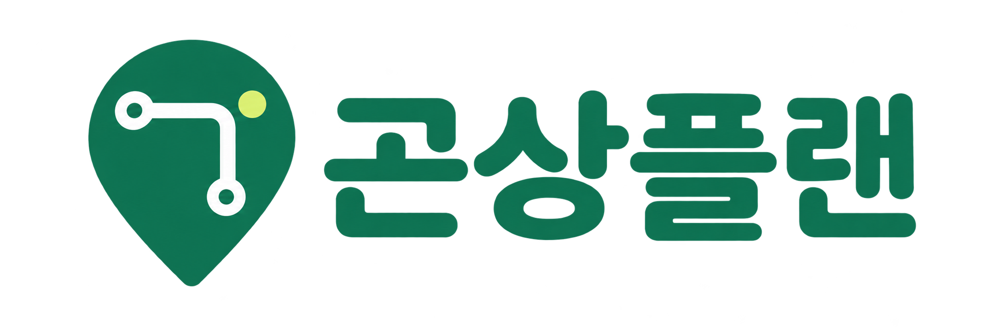

➤서울 SEL
⌖도착 도시
▭날짜
☺탑승객 1명, 일반석
도착 도시·날짜·탑승객은 상단 선택과 연동돼요. 항목을 누르면 상단 선택창이 열립니다.
🏨 숙소 조건
숙소 유형
가격 범위
1박 요금 기준 · 모든 수수료 포함 (원화)
침실과 침대
침실
침대
욕실
편의시설
건물 유형
🍽 맛집 찾기
1인 한 끼 예산
식사 조건

설렘은 가득, 주머니 사정까지 생각한 여행
여행 친구와 함께 일정도 예산도 차근차근.
도착 도시·날짜·탑승객은 상단 선택과 연동돼요. 항목을 누르면 상단 선택창이 열립니다.
1박 요금 기준 · 모든 수수료 포함 (원화)
1인 한 끼 예산
식사 조건